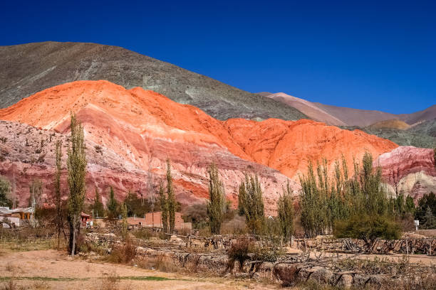
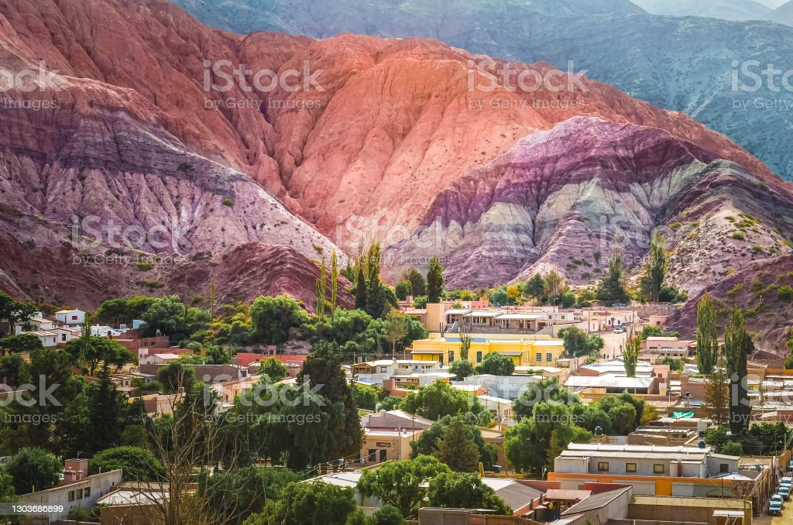
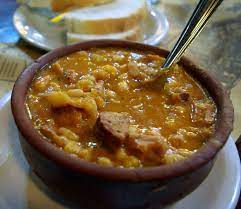

Receta de Locro

Como hacer el mejor locro para el invierno y no morir de frío en el intento

Lista de ingredientes
300 gr de maíz blanco partido
200 gr de poroto pallares blanco
200 gr de panceta
150 gr de chorizo criollo
1/2 chorizo colorado
200 gr de pechito de cerdo
200 g de falda
1 cebolla
500 gr de calabaza
Preparación
Remojar los porotos pallares y el maíz blanco 24 horas antes de preparar el guiso (guardar en recipiente con agua en heladera).
Cortar en cubos todos los ingredientes
Cocinar en una cacerola el maíz junto con los porotos, la calabaza y la cebolla con 2 litros de agua.
Revolver con cuchara de madera cada 15 minutos.
Pasada una hora de cocción sumar las carnes. Revolver
Mas recetas,acá!!
Receta 1
Receta 2